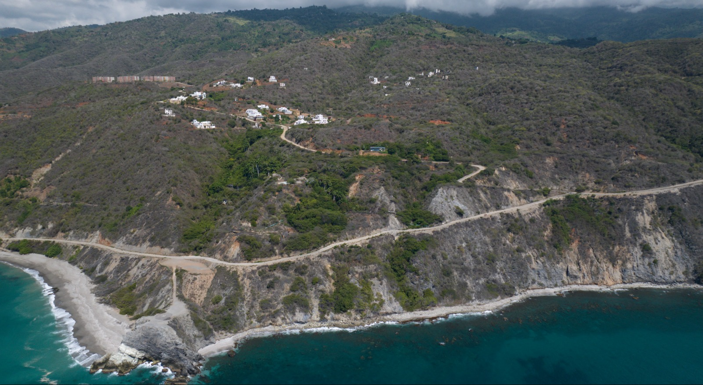
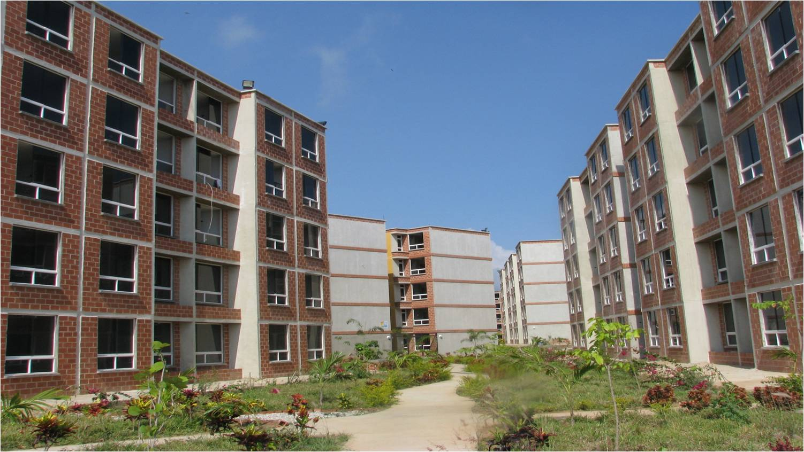
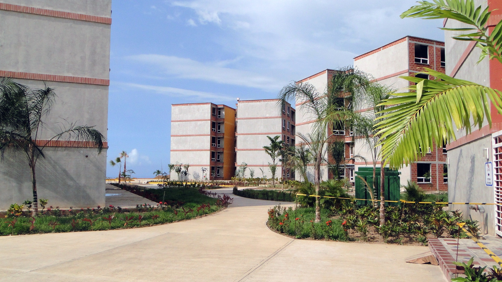
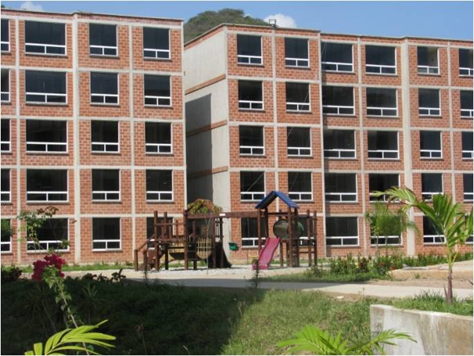
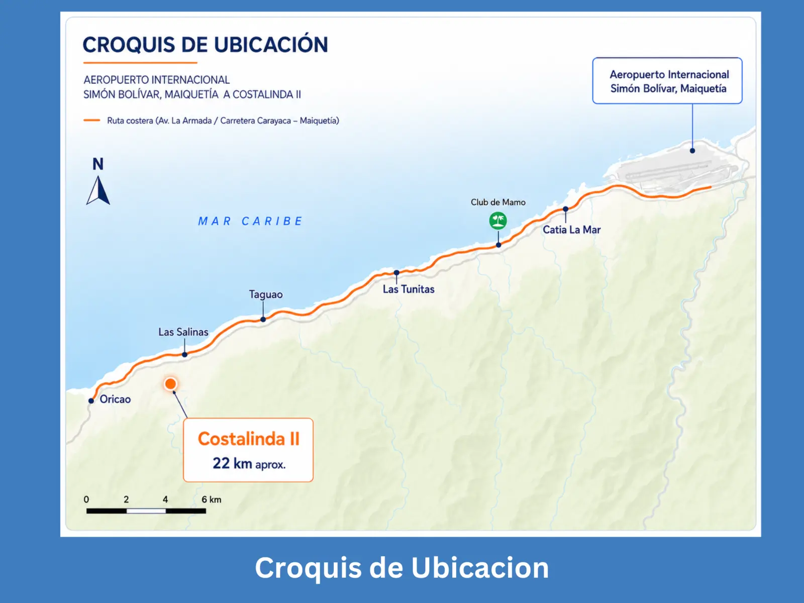
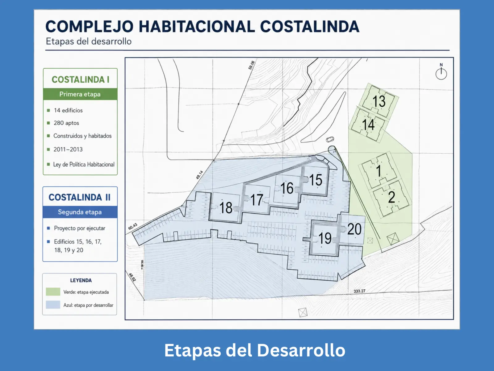
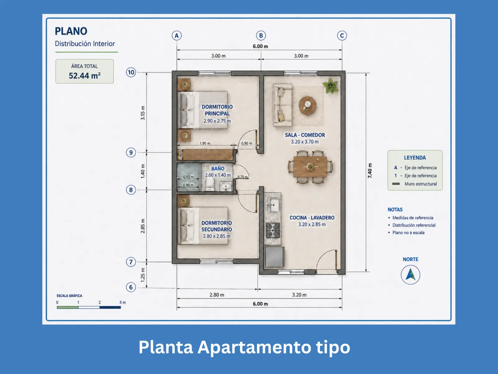
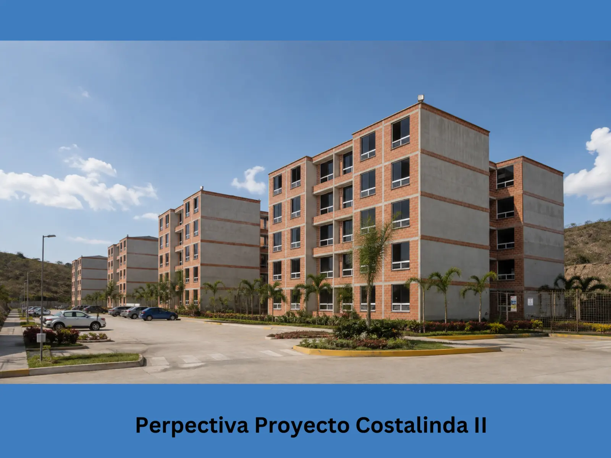
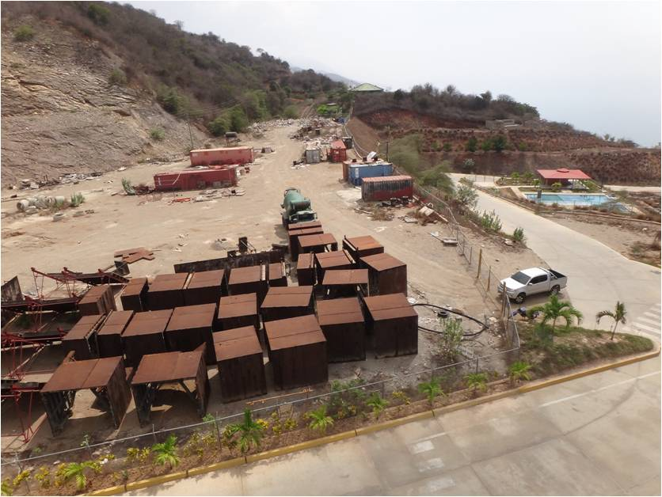

Viviendas existentes
14 edificios consolidados y habitados que constituyen el antecedente directo del desarrollo.
PROPUESTA INSTITUCIONAL PARA EVALUACIÓN
Costalinda presenta una propuesta habitacional escalable para apoyar la recuperación, el desarrollo y el futuro de La Guaira.
180 viviendas de ejecución inmediata · 820 unidades proyectadas en una tercera etapa.
Una base comprobable280 apartamentos construidos en Costalinda I, terreno e infraestructura para la Etapa II y una expansión futura respaldada por variables urbanísticas y anteproyecto aprobados.

UN DESARROLLO HABITACIONAL ESCALABLE
La estrategia propone comenzar con una etapa definida y utilizar su experiencia como plataforma para una expansión de mayor alcance.
14 edificios consolidados y habitados que constituyen el antecedente directo del desarrollo.
Seis edificios definidos, con terreno propio, infraestructura existente y capacidad constructiva disponible.
Expansión prevista en un lote independiente, con variables urbanísticas y anteproyecto aprobados por la ingeniería municipal.
nuevas viviendas
Potencial acumulado del complejo: 1.280 viviendas, incluyendo las 280 ya construidas.IMPACTO PARA LA GUAIRA
Costalinda puede aportar soluciones habitacionales permanentes, generar actividad económica y fortalecer la recuperación social de La Guaira mediante un desarrollo planificado por etapas.
COSTALINDA I · EXPERIENCIA COMPROBABLE
Costalinda I fue desarrollada entre 2011 y 2013 y está conformada por 14 edificios y 280 apartamentos. Los edificios permanecieron estables, habitados y sin afectaciones estructurales reportadas después de los sismos de junio de 2026. Este comportamiento favorable se relaciona preliminarmente con el sistema constructivo y con fundaciones apoyadas sobre estratos rocosos.



ETAPA II · UBICACIÓN Y PRODUCTO
La documentación disponible permite identificar la ubicación, implantación y tipología habitacional previstas para los 180 apartamentos.
UBICACIÓN E IMPLANTACIÓN

Conexión por la ruta costera Maiquetía–Carayaca.

El plano diferencia la primera etapa construida y la parcela de los seis nuevos edificios.
PRODUCTO HABITACIONAL

Dos dormitorios, baño, sala-comedor y cocina-lavadero.

Visualización arquitectónica referencial de la Etapa II.
TERRENO Y CAPACIDAD CONSTRUCTIVA
La parcela de la Etapa II reúne terreno propio, infraestructura existente y equipos de encofrado tipo túnel disponibles para su evaluación y puesta en operación.

FORTALEZAS DEL SISTEMA TÚNEL
El sistema permite ejecutar muros y losas de concreto armado mediante ciclos repetitivos, con uniformidad y control durante la construcción.
ETAPA III · VISIÓN DE EXPANSIÓN
La futura Etapa III se concibe como una ampliación de mayor escala. El lote cuenta con variables urbanísticas y anteproyecto aprobados por la ingeniería municipal. Su desarrollo se presenta como una visión inicial y requerirá completar los estudios, proyectos definitivos, permisos sectoriales, infraestructura y modelo de ejecución correspondientes.
Sin utilizar fotografías o planos en esta presentación.
ARTICULACIÓN PÚBLICO-PRIVADA
La propuesta busca instalar una mesa técnica que permita evaluar la viabilidad jurídica, urbanística, estructural, financiera y social de Costalinda.
DE LA EVALUACIÓN A LA ENTREGA
Presentación formal y definición de responsables.
Inspección de terrenos, equipos, infraestructura y documentos.
Ingeniería, presupuesto, cronograma y permisos.
Aportes, financiamiento, contratación y supervisión.
Construcción progresiva de 180 apartamentos.
Certificación de avances, habitabilidad y adjudicación.
Desarrollo definitivo de la expansión de 820 viviendas.
TRANSPARENCIA Y CONTROL
Partidas, contingencias y cronograma físico-financiero.
Avances certificados antes de cada desembolso.
Control técnico, estructural y geotécnico.
Reportes documentales y fotográficos periódicos.
Materiales, procesos y pruebas de servicios.
Informes de terminación y habitabilidad.
UNA OPORTUNIDAD PARA LA GUAIRA
Costalinda puede transformar capacidades existentes en una solución progresiva: 180 viviendas de ejecución inmediata y una tercera etapa proyectada de 820 unidades para apoyar la recuperación y el desarrollo de La Guaira.
280 viviendas construidas · 1.000 nuevas soluciones habitacionales proyectadas
Evaluar la propuesta institucional →Costalinda se presenta como una iniciativa privada con potencial para contribuir a la recuperación y el desarrollo habitacional de La Guaira. La posible incorporación de sus etapas II y III a programas públicos requerirá la evaluación técnica, jurídica, financiera y social, así como la aprobación formal de las autoridades competentes.